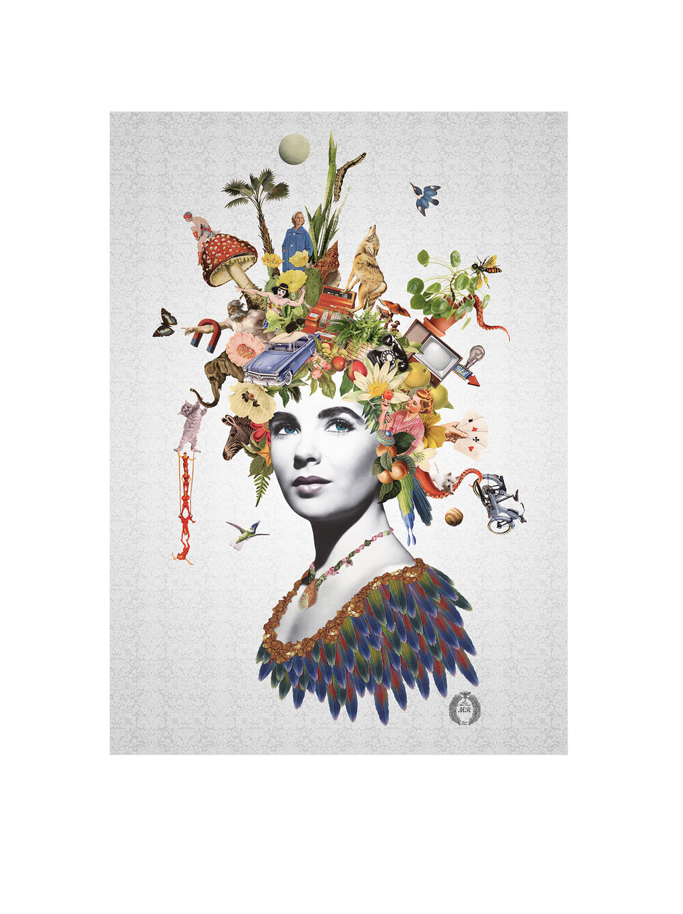
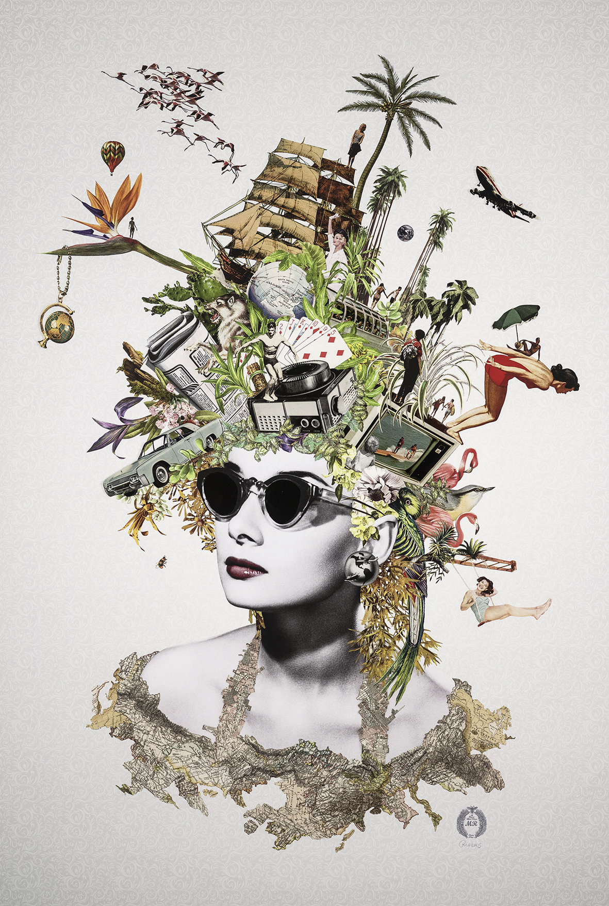
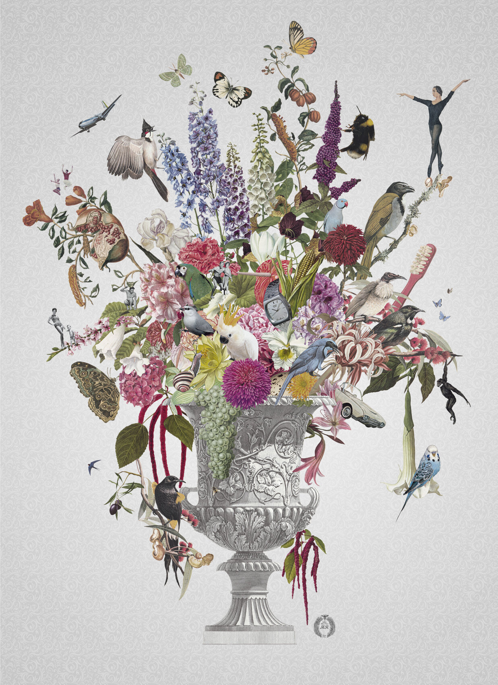

Who is Maria Rivans?
Maria Rivans is a contemporary British artist, known for her mash-up of Surrealism meets Pop-Art aesthetic. With its unique approach to collaging, her artwork intertwines fragments of vintage ephemera, often with reference to film and TV, to spin bizarre and dreamlike tales.
Maria Rivans Art Work:
Juno
Amelia
With Love and Kindness, Forever
About Maria Rivans
Rivans studied 3D design at the University of Brighton, before turning to jewellery design and setting up her own workshop. But an aptitude for the visual arts was in her blood: growing up with her Italian family in Essex, hours of her childhood were devoted to drawing and doodling, listening to music, covering her bedroom walls with film and pop heroes, while she soaked up the televisual culture that would come to form her greatest influence.